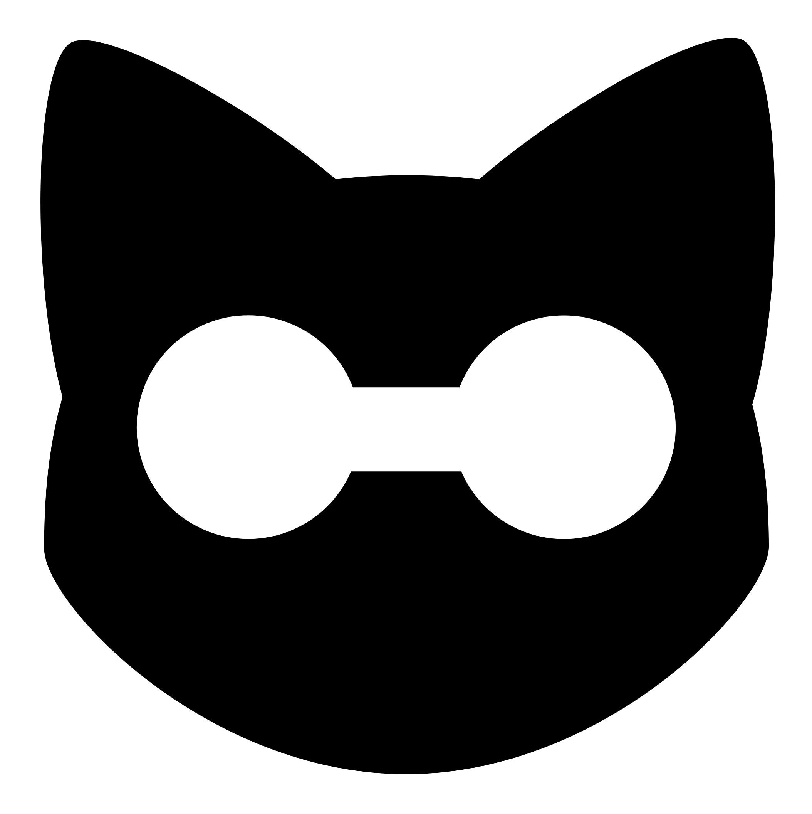
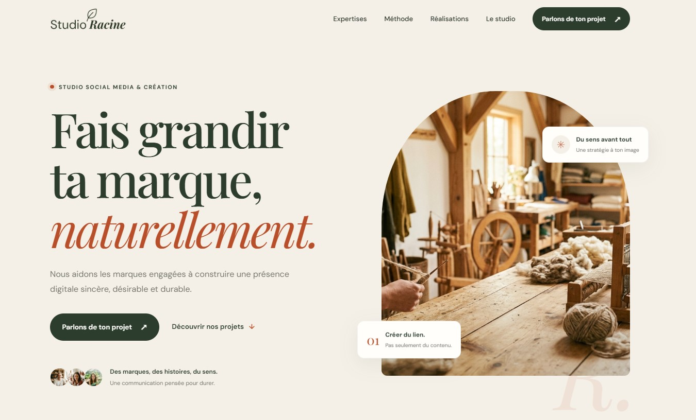

Tourisme

Mada Discovery — Site vitrine touristique
Une immersion visuelle et ergonomique conçue pour valoriser une destination et capter l'attention des voyageurs.

Ga.B WorldCréation web sur mesure
Nous créons des sites web modernes, personnalisés et performants pour donner à votre activité une présence qui inspire confiance.
« Le site est d'une fluidité incroyable et nos clients adorent la nouvelle interface. »
Lova Maharavo — Mada Discovery« Un accompagnement sur le design et l'ergonomie mobile au top. Je recommande à 100% ! »
Sarah R. — Studio Racine« Un service rapide, un design épuré et une attention particulière portée aux détails. »
Sarah Dupuis — Sarah.CMRéalisations
Découvrez une sélection de sites créés pour présenter des activités, des services et des marques avec plus d'impact.
Une immersion visuelle et ergonomique conçue pour valoriser une destination et capter l'attention des voyageurs.

Une communication claire et incarnée pour inspirer confiance, valoriser ton univers et transformer ta communauté en clients fidèles.

Une vitrine dynamique orientée conversion avec chiffres clés animés, études de cas interactives et prise de contact fluide.
Nos offres
Des solutions pensées pour votre activité, votre budget et votre objectif.
01
Pour indépendants, petites entreprises et activités qui veulent aller à l'essentiel.
02
Pour les entreprises qui souhaitent une présence plus complète et plus impactante.
03
Pour les marques qui veulent une expérience digitale plus immersive et distinctive.
Pourquoi Ga.B World
Chaque interface est pensée autour de votre identité et de votre activité.
Une expérience fluide sur ordinateur, tablette et smartphone.
Une construction propre pour privilégier fluidité, clarté et performance.
Des mouvements maîtrisés pour donner du rythme sans nuire à l'expérience.

À propos
Ga.B World accompagne les professionnels et les entreprises dans la création d'une présence web moderne, claire et adaptée à leurs objectifs.
Notre approche combine design, développement et sens du détail pour construire des expériences qui ne se contentent pas d'être belles : elles doivent aussi être utiles.
Démarrer mon projet ↗Notre méthode
 01
01
Nous comprenons votre activité, vos besoins et votre objectif.
 02
02
Nous définissons l'univers visuel et la structure du site.
 03
03
Le design prend vie avec une expérience responsive et animée.
 04
04
Après validation, votre site est préparé pour être publié.
Témoignages
Découvrez les retours de ceux qui nous ont fait confiance pour concrétiser leur projet web.
« L'équipe de Ga.B World a su capter exactement l'essence de notre projet touristique. Le site est d'une fluidité incroyable et nos clients adorent la nouvelle interface. Un travail pro et réactif ! »
« Notre nouveau site vitrine reflète enfin le positionnement haut de gamme de notre studio. L'accompagnement sur le design et l'ergonomie mobile a été un vrai plus. Je recommande à 100% ! »
« Un service rapide, un design dynamique et une attention particulière portée aux conversions. Ga.B World a donné vie à ma vitrine Sarah.CM exactement comme je l'imaginais. »
FAQ
Tout ce qu'il faut savoir avant de lancer votre site web avec Ga.B World.
Le tarif dépend de l'offre et du niveau de personnalisation. Les prix peuvent être affichés ici dès que votre grille tarifaire définitive est fixée.
Le délai dépend de la complexité du projet, du nombre de pages et de la rapidité des validations. Un calendrier précis est défini au démarrage.
Oui. Chaque site est pensé pour offrir une expérience adaptée aux smartphones, tablettes et ordinateurs.
Oui. Un formulaire peut être intégré et connecté à un service externe adapté au projet.
Oui, l'accompagnement peut inclure la préparation et la mise en ligne selon votre hébergement et votre nom de domaine.
Un projet en tête ?
Partagez-nous votre activité, vos besoins et vos objectifs en quelques clics, ou explorez nos réalisations pour découvrir notre façon de travailler.